Before · After
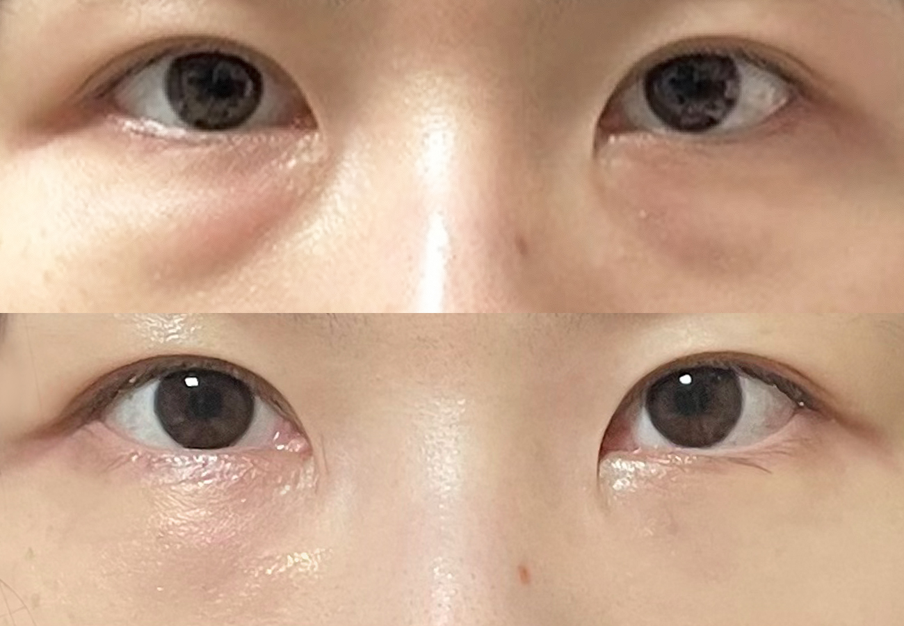
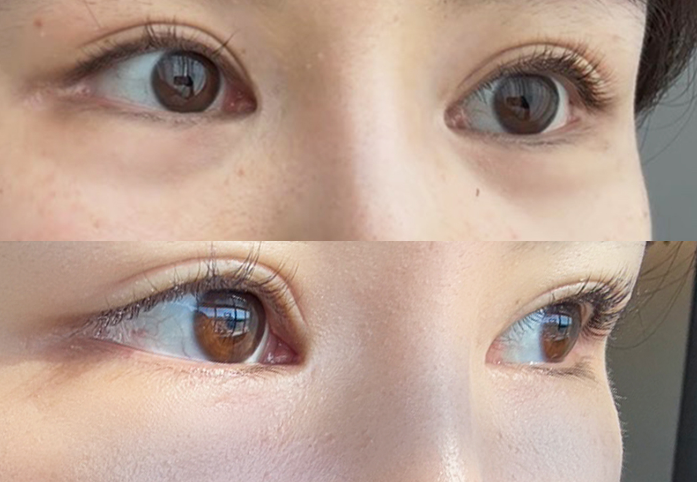
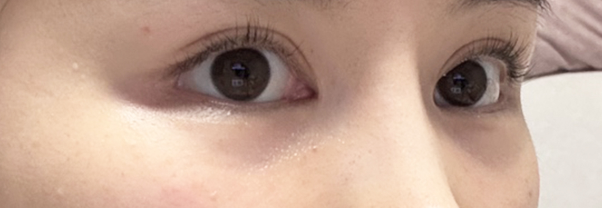
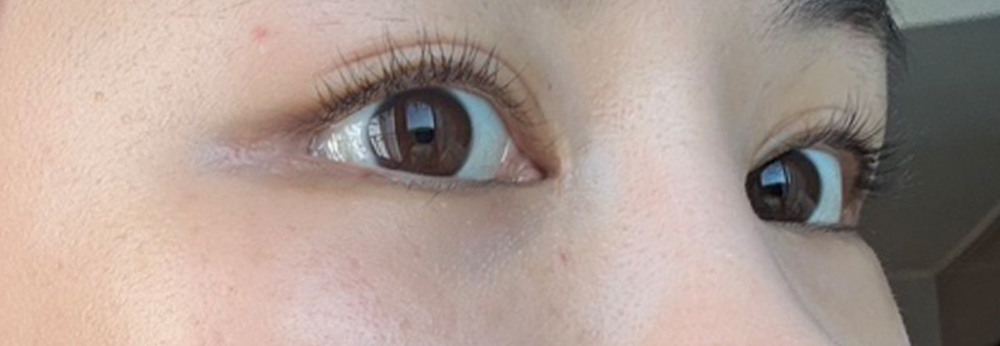
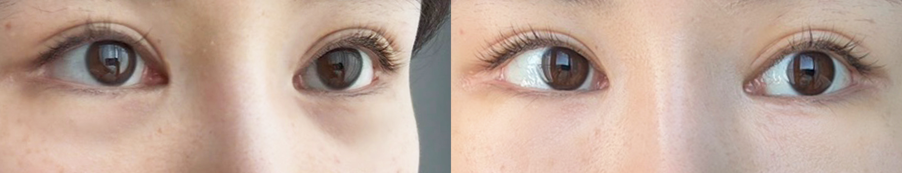
※ 실제 환자 동의를 받은 사진입니다. 개인에 따라 결과와 회복 과정은 다를 수 있습니다.
Self check
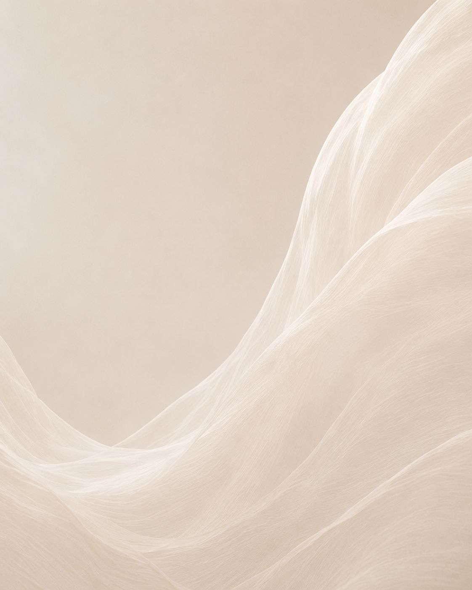
Why repositioning
눈밑 그늘은 볼록한 지방과 그 아래 꺼진 고랑이 함께 만듭니다. VC는 지방을 빼지 않고 꺼진 고랑 쪽으로 옮겨 높낮이를 맞춥니다.
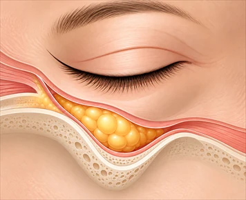
지금
볼록 + 고랑
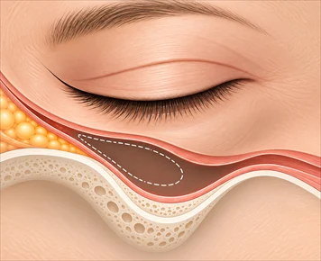
빼기만 하면
전체가 꺼짐
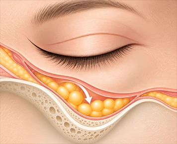
VC 재배치
옮겨서 평평하게
How it works
STEP 01
고랑을 만드는 인대를 풀어 지방이 들어갈 공간을 만듭니다.
STEP 02
볼록한 지방을 빼지 않고 꺼진 자리로 옮겨 높낮이를 맞춥니다.
STEP 03
지방을 받치는 막(격막)을 함께 고정해 다시 볼록해지는 것을 줄입니다.
Doctor
Before you ask
※ 회복 기간은 개인에 따라 다를 수 있습니다.
수술 시간
약 30분
회복 기간
약 1주
마취 방법
수면마취
수술 방법
지방재배치 + 격막강화
사후 관리
붓기 및 멍관리
Our space
예약제로 운영하고 상담·회복을 개별 공간에서 진행합니다.
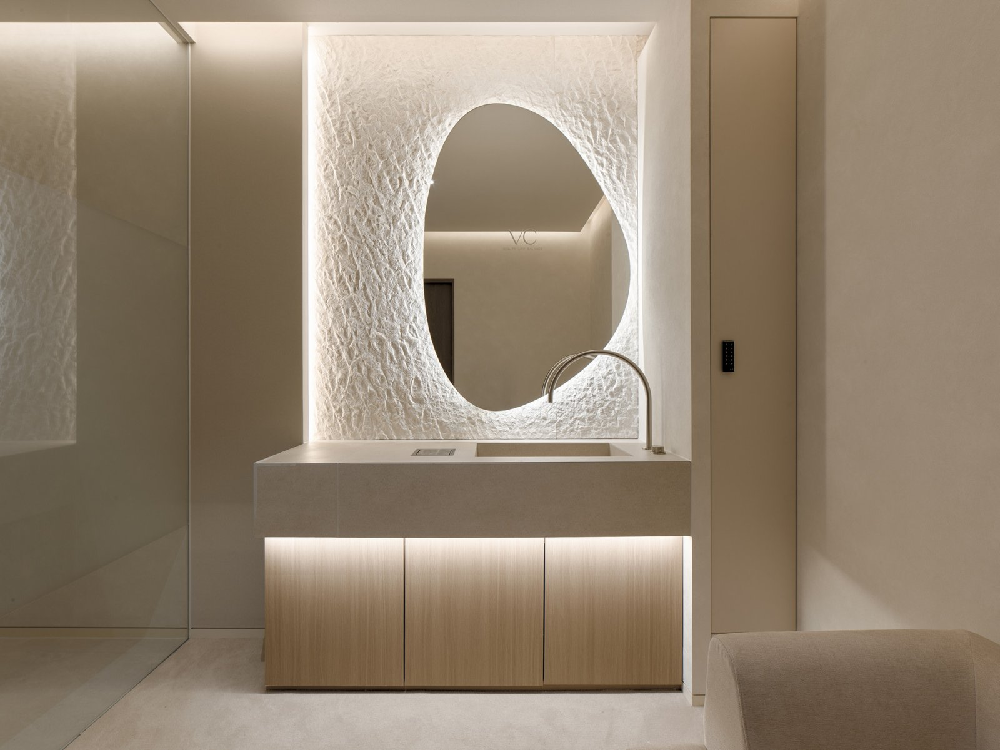
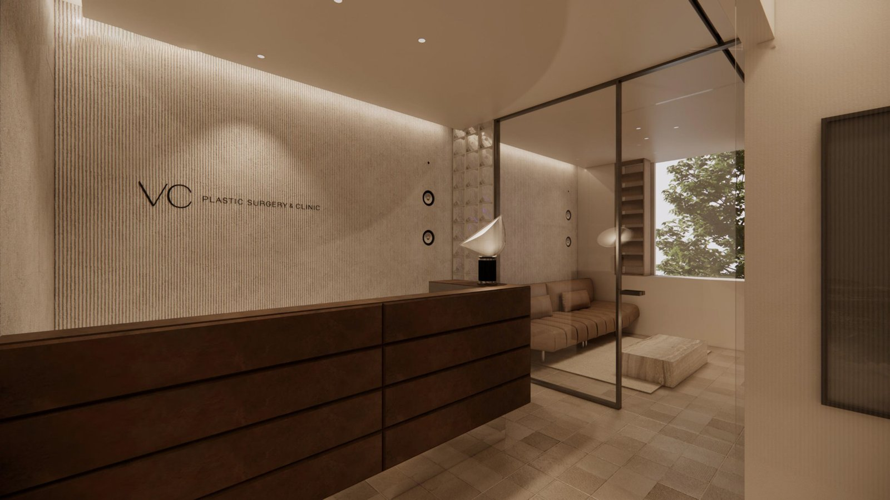
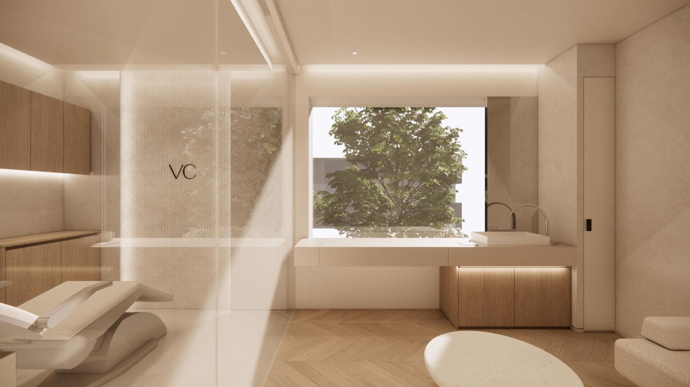
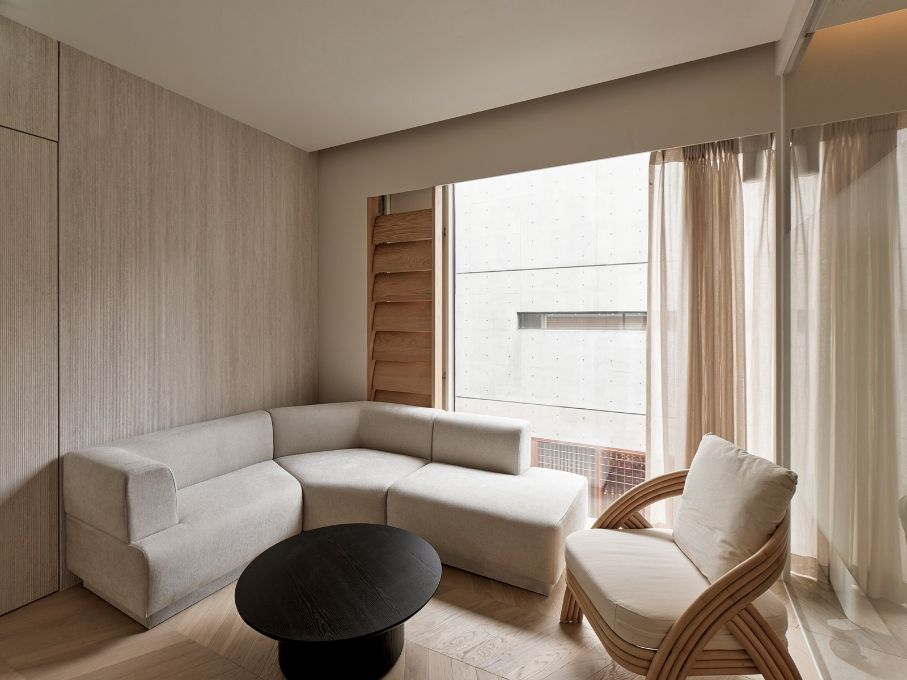
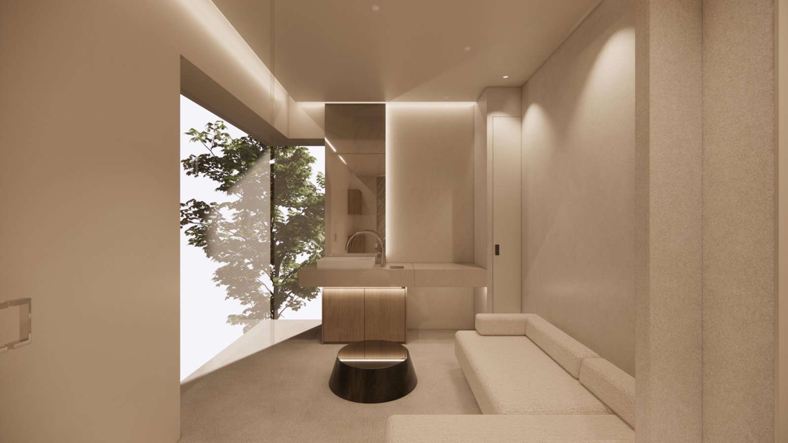
볼록한 지방만 빼면 그 자리가 꺼져 보일 수 있습니다. 재배치는 지방을 꺼진 고랑 쪽으로 옮겨 높낮이를 맞추는 방법입니다.
회복 기간은 보통 1주 안팎이며 개인에 따라 다릅니다. 중요한 일정이 있다면 상담 때 날짜를 알려주세요.
붓기와 멍이 생길 수 있고, 드물게 비대칭 등이 나타날 수 있습니다. 상담 때 원장이 직접 자세히 안내드립니다.
성형외과 전문의 대표원장이 상담부터 수술, 경과 확인까지 직접 진행합니다.
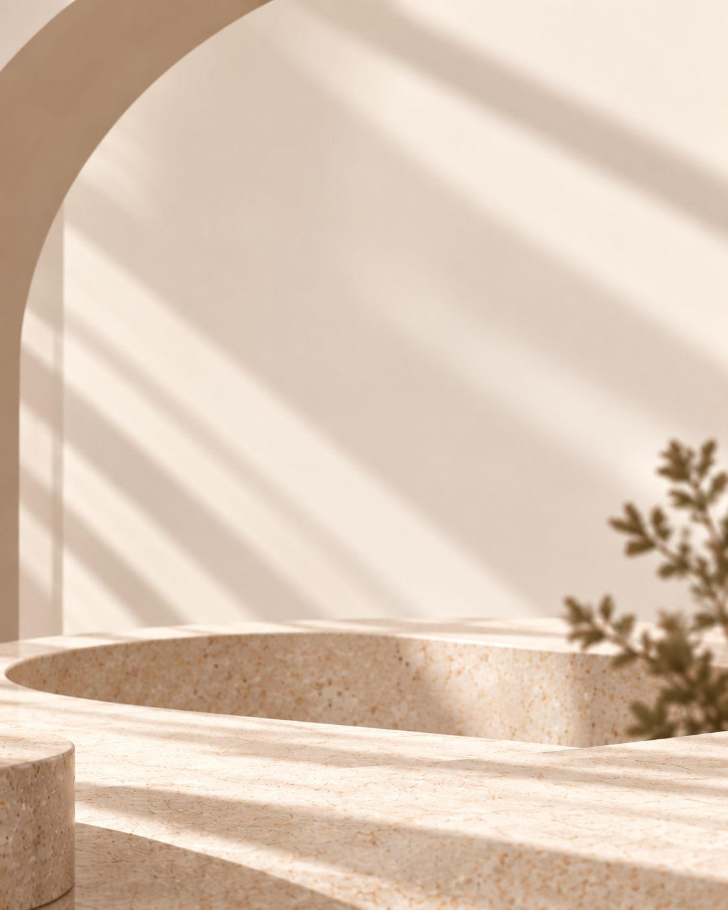
Consultation
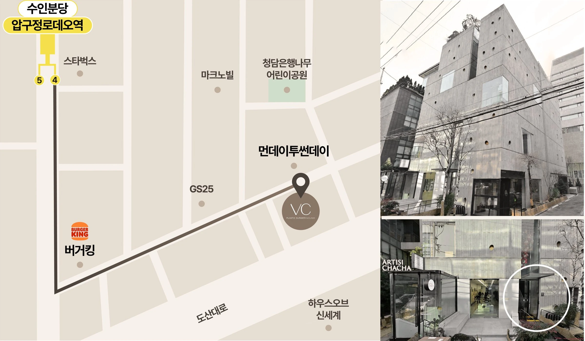
서울 강남구 압구정로80길 31, 2-3층
※ 매주 수요일, 공휴일 휴진
대표전화
02-6228-5827